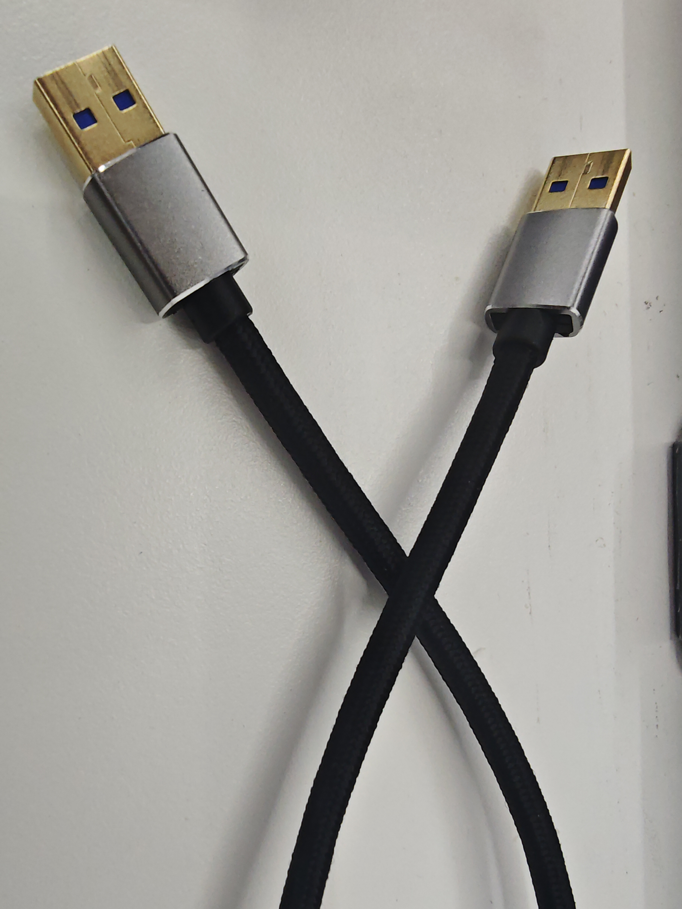

Pro450 System Image Burning Instructions
Note: After the system image is burned, each joint of the robotic arm needs to be recalibrated at its zero position before it can be used normally.
This section will guide you on how to use a burning tool on your PC to correctly burn the system image to the Pro450 controller. Please follow the steps strictly to ensure a safe and successful burning process.
1 Preparation
Before starting the flashing process, please ensure the following hardware and software are ready:
Hardware Requirements
| Device | Quantity | Description |
|---|---|---|
| Windows PC | 1 unit | Running flashing tools and driver installation |
| Double-headed USB cable | 1 piece | Connecting the PC and the Pro450 |
| Pro450 robot | 1 unit | Device to be flashed |
| Stable power supply | 1 set | Powering the Pro450 (keep powered on) |
| Emergency stop switch | 1 unit | Safety protection |
| Network cable | 1 piece | Connecting the robotic arm to the PC |
Software Requirements
Official system image file
Flashing tool (e.g., RKDevTool_Release_v3.15, subject to availability)
Corresponding USB driver (usually a USB-to-serial driver for the device)
🔔 Tip: It is recommended to place all tools in the same folder and avoid Chinese characters or spaces in the path.
Network Configuration
MyCobot Pro 450 Default IP Address:
192.168.0.232Default Port Number:
4500Note: The PC's network card IP address needs to be set to the same subnet (e.g.,
192.168.0.xxx, wherexxxis any number between 2 and 254, and it cannot conflict with the robotic arm).Example:
Robotic Arm IP:
192.168.0.232PC IP:
192.168.0.100Subnet Mask:
255.255.255.0Verification: After completing the network configuration, you can execute the following command in the PC terminal. If it successfully returns data packets, the network connection is normal:
``bash ping 192.168.0.232 ```
2 System Image Download
Click to download the image:myCobot_Pro_450_buildroot_20251110.img
3 Install USB Driver
Click to download the driver:DriverAssitant_v5.12.zip
After downloading the driver, extract and open the provided
DriverAssitant_v5.12folder.Double-click
DriverInstall.exeto install.
4 Install the burning tool
Click to download the burning tool:RKDevTool_Release_v3.15.zip
After downloading the driver, extract and open the provided folder
RKDevTool_Release_v3.15/RKDevTool_v3.15_for_window.Double-click
RKDevTool.exeto run it.
5 Connecting the Pro450 Device
- Connect the device to your PC using a double-ended USB cable.

- Connect one end of the double-ended USB cable to your computer and the other end to the USB1 port (the USB port on top) on the Pro450's dock.

Ensure the Pro450 is powered on and connected to your computer using an Ethernet cable.
Remotely SSH into the Pro450 system from your PC to execute the flashing command.
6 SSH Remote Connection
Use the Win + R shortcut to open the cmd command prompt and enter the following command:
ssh-keygen -R 192.168.0.232
ssh root@192.168.0.232
Follow the prompts to enter yes, then enter the login password root.

7. Start the System Flashing Function
After logging in via SSH, enter the following command to start the system flashing function:
reboot loader

8 Start the flashing tool
After starting the system flashing function in Step 7, opening the flashing tool will display the following image:

- Click the
Upgrade Firmwarebutton

- Click the
Firmwarebutton to open File Explorer, select the system image file to be flashed, and then clickOpen.


- After selecting the image file, click the
Upgradebutton.

- After the system image is successfully burned, a prompt message will appear on the right side of the burning tool:

9 Verify System Image Burning
After burning the system image, reconnect to the robotic arm system remotely using SSH and enter the following command to check the system version number:
cat /etc/version

The system image file name is associated with the system version number. If the output version number matches the date name of the image file, it means the system image was successfully burned.
Note: After the system image is burned, each joint of the robotic arm needs to be recalibrated at its zero position before it can be used normally.